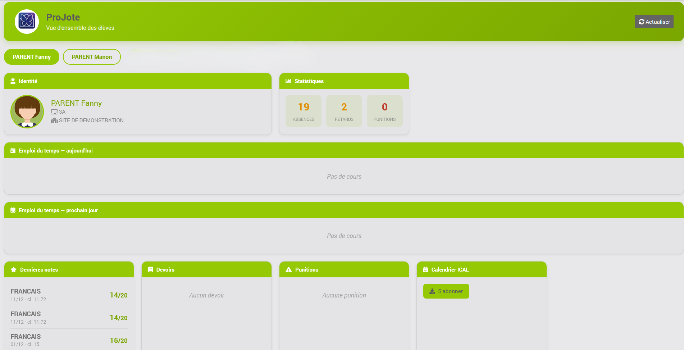
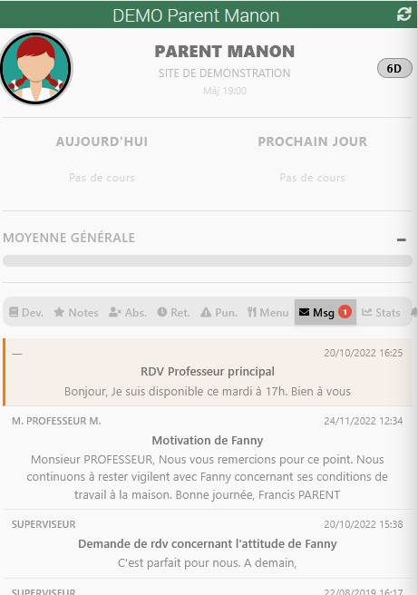
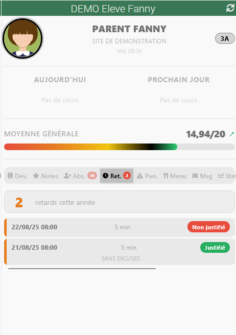

Présentation
ProJote est un plugin Jeedom qui récupère automatiquement les informations scolaires depuis PRONOTE : notes, emploi du temps, devoirs, absences, retards et punitions.
Il s'appuie sur la bibliothèque open source pronotepy pour communiquer avec l'API Pronote, et expose les données sous forme de commandes Jeedom utilisables dans vos scénarios et widgets.
Aperçu
Trois écrans suffisent à montrer ce que le plugin ajoute à Jeedom. Les captures ci-dessous proviennent du site de démonstration de Pronote : aucune donnée réelle d'élève n'y figure.
Le panneau, pour suivre toute la fratrie
Accessible par une icône sous le menu Accueil, avec un onglet par enfant : identité, compteurs de vie scolaire, emploi du temps du jour et du lendemain, dernières notes, devoirs, punitions et lien d'abonnement au calendrier.

Le widget, sur le tableau de bord
Un équipement par élève, avec ses onglets — devoirs, notes, absences, retards, punitions, menu de la cantine, messagerie et statistiques. Les pastilles rouges signalent ce qui demande votre attention.


Prérequis
| Élément | Version / Détail |
|---|---|
| Jeedom | 4.4 ou supérieur |
| Python | 3.8 minimum (vérifié à l'installation des dépendances) |
| Système | Debian 11, Debian 12 (Smart, Luna, Atlas, RPi, Docker, DIY) |
| Paquet système | python3-venv (installé automatiquement par Jeedom dans la plupart des cas) |
| Compte Pronote | Compte élève ou parent actif sur le portail Pronote de l'établissement |
| Réseau | Accès sortant HTTPS vers le serveur Pronote de l'établissement (et l'ENT si utilisé) |
| pronotepy | Branche 2.x (installation contrainte à >=2.15.6,<3.0 — plancher relevé pour les serveurs PRONOTE 2026) |
Installation
- Accédez au Market Jeedom et recherchez ProJote.
- Cliquez sur Installer.
- Depuis la page du plugin, cliquez sur Installer les dépendances.
La première installation peut prendre quelques minutes (téléchargement de pronotepy et ses dépendances). - Activez le plugin, puis démarrez le démon.
- Créez un équipement via Ajouter et configurez la connexion.
Connexion
Deux méthodes sont disponibles. La méthode QR Code est recommandée car elle ne nécessite pas de stocker votre mot de passe.

Par identifiants (Login)
Renseignez les informations suivantes dans la configuration de l'équipement :
| Champ | Description |
|---|---|
| ENT / CAS | Sélectionnez votre espace numérique de travail. En cas de doute, essayez Aucun. |
| Type de compte | Élève ou Parent |
| Login | Votre identifiant Pronote |
| Mot de passe | Votre mot de passe (stocké chiffré, jamais affiché dans les logs) |
| URL | Adresse Pronote de l'établissement (voir exemples ci-dessous) |
# Compte élève
https://demo.index-education.net/pronote/eleve.html
# Compte parent
https://xxxxx.index-education.net/pronote/parent.html
Cliquez sur Valider. Le plugin se connecte, génère un token persistant et sauvegarde les données.
Par QR Code
1 — Générer le QR Code sur Pronote
Depuis votre navigateur, connectez-vous sur le site Pronote de l'établissement, puis :
- Cliquez sur votre avatar en haut à droite.
- Sélectionnez Générer un QR Code.
- Choisissez un code PIN à 4 chiffres de votre choix.
- Cliquez sur Générer.

2 — Capturer le QR Code
Sous Windows, utilisez la capture d'écran clavier pour copier le QR Code :
Windows + Shift + S → dessinez un rectangle autour du QR Code.
L'image est copiée dans le presse-papier.
3 — Coller le QR Code dans ProJote
- Dans la configuration de l'équipement, sélectionnez l'authentification QR Code.
- Faites un clic droit → Coller dans le cadre gris, ou importez l'image enregistrée.
- Saisissez le PIN à 4 chiffres choisi précédemment.
- Cliquez sur Valider.

Commandes disponibles
Une fois connecté, le démon synchronise les données Pronote toutes les heures, dans la plage horaire choisie en configuration du plugin (7h–20h par défaut). Vous pouvez forcer une actualisation avec la commande Rafraîchir, à toute heure.
Tous les onglets ne sont pas relevés à chaque cycle : notifications et messagerie le sont toutes les trois heures, les menus de la cantine deux fois par jour. Emploi du temps, notes, devoirs, absences, retards et punitions le sont à chaque cycle. Un onglet non relevé conserve sa valeur précédente — aucune commande ne se vide. Voir Cadence de collecte.
| Commande | Type | Description |
|---|---|---|
| Rafraîchir | action | Force une synchronisation immédiate avec Pronote (utilisable à toute heure, y compris durant la fenêtre nocturne). |
| Statut connexion | info | État courant : Connecté, Déconnecté : <raison> ou Erreur : <raison>. Utile pour scénarios d'alerte. |
| Dernière mise à jour | info | Horodatage de la dernière collecte réussie (commande LastLogin). |
| Nom de l'élève | info | Prénom et nom |
| Classe | info | Intitulé de la classe |
| Établissement | info | Nom de l'établissement scolaire |
| Photo | info | Chemin local de la photo de profil |
| URL iCal | info | Lien d'abonnement au calendrier Pronote |
| Nb absences / retards / punitions | info | Compteurs sur la période en cours |
| Évènements de vie scolaire v1.7.0 | info | Observations, défauts de carnet et mesures conservatoires — les entrées du Carnet que Pronote ne classe pas comme punitions. Trois commandes : la liste, le dernier en date, et le compteur. |
| Nb devoirs (fait / non fait) | info | Devoirs de la semaine, ventilés par statut |
| Nb devoirs demain (fait / non fait) | info | Devoirs pour le prochain jour de cours |
| EDT aujourd'hui — début / fin / cours annulés | info | Repères horaires de la journée |
| EDT prochain jour — date / début / fin / cours annulés | info | Informations sur le prochain jour de cours |
| EDT J+1 à J+4 | info | Emploi du temps détaillé sur les 4 prochains jours scolaires |
| Cours annulés (total période) | info | Nombre total de cours annulés depuis la rentrée |
| Liste des devoirs / absences / retards / punitions | info | Détails formatés HTML pour le widget |
| — Périodes et calendrier (v1.4.1) — | ||
| Période en cours | info | Nom du découpage courant tel que Pronote le désigne : Trimestre 1, Semestre 1… |
| Début / Fin de la période | info | Bornes de la période en cours, au format jj/mm/aaaa. |
| Début / Fin de l'année scolaire | info | Bornes de l'année complète, telles que publiées par Pronote. |
| Prochaines vacances | info | Libellé de la prochaine interruption : Vacances de la Toussaint, Armistice 1918… Pronote mêle vacances et jours fériés dans la même liste. |
| Début / Fin des prochaines vacances | info | Dates de cette interruption. Un jour férié isolé porte la même date de début et de fin. |
| — Menu cantine (v1.0.1) — | ||
| menu_midi_aujourdhui | info | Texte lisible du menu de midi du jour ("Entrée · Plat · Dessert…"). Vide si pas de menu. |
| menu_midi_demain | info | Idem pour le lendemain. |
| menu_semaine | info | HTML compact des menus sur 7 jours (consommé par le widget). |
| Nb_menus_semaine | info | Nombre de menus disponibles dans la fenêtre. |
| — Messagerie (v1.0.1) — | ||
| Nb_messages | info | Nombre total de discussions visibles. |
| Nb_messages_non_lus | info | Compteur des messages non lus. Idéal pour scénarios d'alerte (TTS, push…). |
| dernier_message_expediteur | info | Créateur (souvent un prof ou le CPE). |
| dernier_message_sujet | info | Objet du dernier message. |
| dernier_message_date | info | Date du dernier message dd/mm/yyyy HH:MM. |
| dernier_message_extrait | info | Contenu tronqué à 200 caractères. |
| messages_html | info | Liste HTML compacte de toutes les discussions (consommée par l'onglet Msg). |
| — Prochain DS / évaluation (v1.0.1) — | ||
| prochain_DS_matiere | info | Matière du prochain devoir surveillé détecté. Vide si aucun DS à venir. |
| prochain_DS_date | info | Date au format dd/mm/yyyy. |
| prochain_DS_dans_jours | info | Nombre de jours avant le DS (entier). Pratique pour scénarios mode révision. |
| prochains_DS_html | info | Liste HTML des 5 prochains DS détectés. |
| — Statistiques (v1.1.0) — | ||
| moyenne_generale | info | Moyenne générale pondérée sur 20, calculée par le démon à partir de toutes les notes (même formule que le widget). Historisée — exploitable dans un graphique d'historique Jeedom. Vide si aucune note exploitable. |
| matiere_en_baisse | info | Matière(s) dont la moyenne récente chute d'au moins 2 points sur 20 par rapport au début (matières ayant ≥ 4 notes). Plusieurs matières séparées par « · ». Vide si aucune baisse détectée. |
| — Centre d'alertes (v1.1.0) — | ||
| event | info | Libellé du dernier événement ProJote détecté (nouvelle absence/retard/punition, nouveau message, contrôle détecté, matière en baisse). Pratique comme déclencheur de scénario. La liste complète (50 derniers) est affichée dans l'onglet Alertes du widget. |
| nouvelle_note | info | Libellé de la dernière nouvelle note détectée par rapport à la sync précédente (ex. « Maths : 16/20 — DS trigonométrie »). Mise à jour uniquement sur une vraie nouveauté → déclencheur de scénario idéal. |
| nouveau_devoir | info | Libellé du dernier nouveau devoir détecté (ex. « Maths (12/03) : exercices p.42 »). Même logique de déclenchement que nouvelle_note. |
Nb_absences, Nb_retard, Nb_devoir_NF et
moyenne_generale sont historisées par défaut : Jeedom conserve
leur évolution dans le temps, consultable via un graphique d'historique (widget « historique »
ou page de la commande). L'historisation est activée automatiquement, y compris sur les
équipements créés avant la 1.1.0.
Période en cours reprend
celle que Pronote lui-même désigne par défaut pour l'onglet Notes — c'est la référence la plus
fiable. Si le serveur ne la publie pas, le démon retient la période contenant la date du jour,
la plus courte d'abord, sans quoi Année continue l'emporterait sur le trimestre réel.
Pour les absences, retards et punitions — qui s'interrogent par plage de dates — le démon n'interroge que le minimum de périodes couvrant l'année, soit une seule dans le cas courant. Les résultats seraient identiques en les interrogeant toutes, mais au prix de douze fois plus de requêtes.
note/derniere_note— les notes chiffrées (sur 20, avec coefficients) utilisées pour le calcul de la moyenne.competences— les évaluations par compétences (acquis / non acquis, niveaux de maîtrise), sans valeur numérique et donc jamais intégrées à la moyenne.
Cadence de collecte v1.5.0
Le plugin interrogeait les douze onglets Pronote à chaque cycle. Mesuré sur un compte réel, un cycle complet coûte 113 requêtes et 5 ré-authentifications. Ce n'est pas anodin : Pronote suspend l'adresse IP des installations qu'il juge trop bavardes, et la suspension double de durée à chaque récidive.
Chaque onglet suit désormais sa propre cadence, choisie d'après ce que chacun coûte réellement et d'après ce qu'il apporte à être vu tout de suite :
| Onglet | Coût par relevé | Cadence | Pourquoi |
|---|---|---|---|
| Emploi du temps | 45 requêtes | Chaque heure | Le plus cher, et gardé au maximum : une annulation de cours vue six heures plus tard ne sert à rien. |
| Notes | 24 requêtes | Chaque heure | C'est ce que la plupart des scénarios surveillent. |
| Notifications | 19 requêtes, 3 ré-authentifications | Toutes les 3 h | Le poste le plus lourd en authentifications, pour un contenu qui n'est pas à la minute. |
| Messagerie | 9 requêtes | Toutes les 3 h | Un message lu trois heures plus tard reste un message lu. |
| Devoirs, absences | 6 requêtes chacun | Chaque heure | Cœur du suivi quotidien. |
| Menus de la cantine | 2 requêtes | 2 fois par jour | Publiés pour la semaine entière. |
| Évènements de vie scolaire | 1 requête | Chaque heure | Un mot du professeur principal se lit le jour même, pas le lendemain. |
| Périodes, retards, punitions | 0 requête | Chaque heure | Ces données arrivent avec la session : les espacer n'aurait rien fait gagner. |
Sur un cycle courant, ces cadences font passer la collecte de 107 requêtes et 4 ré-authentifications à 72 requêtes et aucune ré-authentification.
Choisir les onglets suivis
Tout le monde ne suit ni la messagerie, ni la cantine, ni les compétences. Dans l'onglet Affichage de l'équipement, la ligne Onglets suivis permet de décocher cinq catégories : Messagerie, Cantine, Notifications, Compétences et Évènements de vie scolaire.
Décocher une catégorie a deux effets : ses commandes ne sont plus créées — un équipement en crée une centaine, autant de lignes en base et sur le tableau de bord — et le plugin cesse d'interroger Pronote pour cet onglet.
Widget
Le widget principal (projote) regroupe toutes les informations sur un seul tuile de tableau de bord :
- En-tête — photo de profil · nom de l'élève · classe et établissement · date de dernière sync
- Vie scolaire — badges circulaires pour absences, retards, punitions, devoirs non faits
- Emploi du temps — cours d'aujourd'hui + navigation vers les 4 prochains jours scolaires, nombre de cours annulés depuis la rentrée
- Moyenne générale — barre dégradée rouge→vert avec tendance (hausse/baisse)
- Onglets — Devoirs · Notes · Absences · Retards · Punitions · Menu cantine (v1.0.1) · Messagerie (v1.0.1) · Statistiques (v1.1.0) · Alertes (v1.1.0)
- Onglet Statistiques (v1.1.0) — courbes d'évolution (sparklines) de la moyenne générale, des absences, retards et devoirs non faits sur ~120 jours, à partir des données historisées par Jeedom. Affiche aussi les éventuelles matières en baisse. L'onglet n'affiche des courbes qu'une fois assez d'historique accumulé.
- Onglet Alertes (v1.1.0) — centre regroupant les événements ProJote générés automatiquement (nouvelle absence, nouveau retard, nouvelle punition, nouveau message non lu, contrôle détecté, matière en baisse — historique des 50 derniers) et les notifications Pronote (informations & sondages). Un badge indique le nombre de notifications Pronote non lues.
- Onglet Compétences — évaluations par compétences (acquis / niveaux de maîtrise) : par évaluation, matière, date et puces de niveau par acquisition. Badge = nombre d'évaluations par compétences.
- Allergènes / labels du menu (v1.1.0) — l'onglet Menu cantine affiche les labels Pronote (Bio, Local, Porc, allergènes…) sous forme de puces discrètes, lorsqu'ils sont renseignés par l'établissement.
- Badge "Prochain DS" (v1.0.1) — en-tête, libellé adaptatif aujourd'hui / demain / J-X. Visible uniquement si un DS est à venir. Un clic ouvre l'onglet Devoirs.
- Détail cours annulés (v1.0.1) — affichage
Matière · Professeur · Salle — Annulédans l'EDT. - Spinner de chargement — le logo ProJote tourne dans la zone avatar pendant la collecte ; un clic déclenche un rafraîchissement manuel
Personnalisation du widget
Les paramètres suivants sont accessibles dans la configuration de l'équipement, onglet Affichage → section Paramètres avancés :
| Paramètre | Valeurs | Défaut | Description |
|---|---|---|---|
| Couleur d'accentuation | Sélecteur de couleur | #94C904 (vert ProJote) |
Couleur des badges, de la barre de moyenne, des cours EDT et des éléments actifs. |
| Taille de police | 10 · 11 · 12 · 13 · 14 · 15 · 16 px | 12px |
Taille de base du texte dans l'ensemble du widget. Les autres tailles (titres, badges…) sont relatives à cette valeur. |
| Onglet par défaut | Devoirs · Notes · Absences · Retards · Punitions · Menu cantine · Messagerie · Statistiques | Devoirs | Onglet ouvert à l'affichage initial du widget. |
| Navigation EDT jours suivants | Jour suivant (J+1) · Flèches (J+1 à J+4) | Jour suivant (J+1) |
Jour suivant : affiche uniquement le prochain jour scolaire (comportement classique). Flèches : affiche des boutons ‹ › permettant de naviguer entre J+1 et J+4. La flèche gauche est grisée sur J+1, la flèche droite sur J+4. |
Calcul de la moyenne générale
Source de la moyenne
Le widget utilise en priorité la moyenne officielle Pronote transmise par le démon. Pronote publie cette valeur dans period.overall_average uniquement lorsque le bilan de la période est clôturé (fin de semestre ou de trimestre).
Si aucune moyenne officielle n'est disponible (période en cours, établissement ne la publiant pas), le widget bascule sur un calcul local à partir de toutes les notes reçues :
moyenne = Σ( (note ÷ sur) × 20 × coeff ) ÷ Σ(coeff)Cas particuliers
| Cas | Comportement |
|---|---|
sur absent ou nul | Valeur par défaut 20 — la note est traitée comme si elle était sur 20 |
coeff absent | Valeur par défaut 1 |
coeff décimal (ex. 1.5) | Pris en compte tel quel |
coeff = 0 (note optionnelle / bonus) | Note exclue de la moyenne (contribue 0 au numérateur et 0 au dénominateur) |
note non numérique (ex. Absent, Dispensé) | Note exclue du calcul |
Export iCalendar (.ics) v1.1.0
ProJote expose un calendrier iCalendar natif généré à partir des données déjà collectées (emploi du temps et devoirs), abonnable depuis n'importe quelle application de calendrier (Google Agenda, Apple Calendrier, Thunderbird, Nextcloud…).
| Contenu | Détail |
|---|---|
| Cours (VEVENT) | Emploi du temps du jour, du prochain jour et des 4 jours suivants (J+1 à J+4), avec horaires, salle et professeur. Les cours annulés sont marqués STATUS:CANCELLED. |
| Devoirs (VTODO) | Devoirs à faire, avec échéance et statut (fait / à faire). |
URL d'abonnement :
https://<votre-jeedom>/plugins/ProJote/core/php/calendar.php?apikey=<clé_API>&id=<id_équipement>- clé_API : la clé API du plugin ProJote (Réglages → Système → Configuration → API).
- id_équipement : l'identifiant de l'équipement ProJote (visible dans l'URL de sa page de configuration).
URL iCal
La commande URL_Ical pointe vers le calendrier fourni par Pronote (si
l'établissement l'active). L'export ci-dessus est généré localement par ProJote : il
fonctionne indépendamment de Pronote et inclut les devoirs en tâches (VTODO).
Pièces jointes des actualités v1.7.1
Certains établissements ne publient pas le menu de la cantine dans l'onglet prévu pour cela, mais en PDF attaché à une actualité. Le plugin sait désormais récupérer ces fichiers — mais seulement ceux que vous désignez.
Ce qui s'affiche sans rien régler
Les pièces jointes sont toujours signalées dans l'onglet Alertes du widget, sous l'actualité qui les porte. Les lister ne coûte aucune requête supplémentaire à Pronote, le plugin lisant déjà le contenu de chaque actualité.
| Icône | Ce qu'elle dit |
|---|---|
| Disquette opaque, sur fond vert | Le fichier est sur le disque de votre Jeedom. Un clic l'ouvre. |
| Disquette grisée | Le fichier existe chez Pronote mais n'a pas été demandé — il ne correspond à aucun de vos mots, ou l'option est désactivée. |
| Maillon grisé | La pièce jointe est un lien externe, pas un fichier : il n'y a rien à rapatrier. |
Activer le téléchargement
Dans l'équipement, onglet Configuration, dépliez la section Avancé :
| Réglage | Rôle |
|---|---|
| Télécharger les pièces jointes | Désactivé par défaut. Tant qu'il l'est, rien n'est rapatrié : les pièces jointes sont seulement signalées. |
| Mots reconnus | Chaînes séparées par des virgules. Un fichier est pris si l'une d'elles figure dans son nom ou dans le titre de l'actualité qui le porte. La casse et les accents sont ignorés. |
| Durée de rétention | 30 jours par défaut. Au-delà, le fichier est effacé au relevé suivant. La durée se compte depuis le dernier téléchargement réel, pas depuis la dernière vérification. |
Des exemples cliquables sont proposés sous le champ ; en voici la lecture :
| Vous saisissez | Ce qui est rapatrié |
|---|---|
menu, cantine | Le cas courant. Attrape Menu_S39.pdf, mais aussi S39.pdf s'il est publié sous une actualité nommée Menu de la semaine. |
menu | Plus étroit, si votre établissement est régulier dans ses intitulés. |
.pdf | Tous les PDF joints aux actualités, quel que soit leur sujet. |
restauration, self, repas | Pour les établissements qui n'emploient ni « menu » ni « cantine ». |
| (vide) | Rien. C'est le défaut. |
Où vont les fichiers
Dans plugins/ProJote/data/<identifiant de l'équipement>/file/, un dossier
propre à chaque enfant. Le nom du fichier est assaini avant d'être écrit : il vient de
Pronote, et ne doit jamais composer un chemin. Un fichier de plus de 5 Mo est refusé.
Le fichier n'est pas repris à chaque relevé
Le plugin ne retélécharge pas ce qu'il a déjà. Trois garde-fous se succèdent :
- Un délai de 12 heures. Un fichier vérifié récemment n'est pas redemandé du tout. Un menu est hebdomadaire : le revoir deux fois par jour suffit.
- Une requête conditionnelle. Passé ce délai, le plugin demande au serveur si le fichier a changé. Mesuré le 24 septembre 2026 : les serveurs Pronote ignorent cette demande et renvoient le fichier entier — d'où le troisième garde-fou.
- Une comparaison d'empreinte. Si le contenu reçu est identique à celui qu'on a, le fichier sur disque n'est pas réécrit et sa date de rapatriement est conservée — ce qui évite aussi qu'un fichier inchangé échappe indéfiniment à la rétention.
Exemples de scénarios
ProJote n'embarque aucun scénario prédéfini : il expose des commandes que vous combinez librement dans vos propres scénarios Jeedom. Voici cinq recettes prêtes à recopier. Chaque recette décrit le déclencheur, la condition et l'action — adaptez les seuils, équipements et messages à votre installation.
#[…]#) sont à remplacer par la référence de la commande
de votre équipement ProJote, via le sélecteur de commande de l'éditeur de scénario
Jeedom. Les noms entre crochets correspondent aux logicalId listés dans la section
Commandes disponibles.
1 — Réveil adaptatif selon l'heure du premier cours
Décale le réveil (ou l'annonce vocale) en fonction de l'heure réelle de début des cours du jour.
| Élément | Configuration |
|---|---|
| Déclencheur | Programmation (cron) chaque matin, ex. 30 6 * * 1-5 (6h30, du lundi au vendredi) |
| Condition | #[…][ProJote][edt_aujourdhui_debut]# n'est pas vide (sinon journée sans cours) |
| Action | Annonce vocale / notification : « Premier cours à #[…][ProJote][edt_aujourdhui_debut]# ». Optionnel : déclencher la lumière ou le réveil X minutes avant cette heure. |
2 — Anti-oubli des devoirs du lendemain
Rappelle en soirée s'il reste des devoirs non faits pour le jour scolaire suivant.
| Élément | Configuration |
|---|---|
| Déclencheur | Programmation (cron) en soirée, ex. 0 19 * * 0-4 (19h, veille de jour scolaire) |
| Condition | #[…][ProJote][Nb_devoir_Demain_NF]# > 0 |
| Action | Notification listant les devoirs : « #[…][ProJote][Nb_devoir_Demain_NF]# devoir(s) à faire pour demain » + contenu de #[…][ProJote][devoir_Demain]#. |
3 — Alerte parent en cas de nouvelle absence
Prévient dès que le compteur d'absences augmente.
| Élément | Configuration |
|---|---|
| Déclencheur | Sur changement de la commande #[…][ProJote][Nb_absences]# |
| Condition | La nouvelle valeur est supérieure à la précédente (utiliser une variable mémorisant l'ancien total, ou le déclencheur « valeur augmente ») |
| Action | Notification push aux parents avec le détail de #[…][ProJote][derniere_absence]#. |
4 — Mode révision avant un contrôle
Active une ambiance « révision » quand un DS approche (J-2 ou moins).
| Élément | Configuration |
|---|---|
| Déclencheur | Sur changement de #[…][ProJote][prochain_DS_dans_jours]#, ou cron quotidien le soir |
| Condition | #[…][ProJote][prochain_DS_dans_jours]# ≥ 0 ET ≤ 2 |
| Action | Rappel vocal / notification : « Contrôle de #[…][ProJote][prochain_DS_matiere]# le #[…][ProJote][prochain_DS_date]# ». Optionnel : tamiser l'éclairage du bureau, couper les notifications de loisir. |
5 — Annonce du menu de la cantine
Annonce le menu du midi au moment du départ pour l'école ou avant le repas.
| Élément | Configuration |
|---|---|
| Déclencheur | Programmation (cron), ex. 30 7 * * 1-5 (7h30) ou 0 11 * * 1-5 (11h) |
| Condition | #[…][ProJote][menu_midi_aujourdhui]# n'est pas vide |
| Action | Annonce vocale (TTS) : « Au menu ce midi : #[…][ProJote][menu_midi_aujourdhui]# ». |
6 — Notification WhatsApp à chaque nouvelle note v1.1.0
Envoie un message dès qu'une nouvelle note est saisie dans Pronote. La commande
nouvelle_note est mise à jour (et déclenche donc le scénario) uniquement quand une
note nouvelle est détectée par rapport à la synchronisation précédente.
| Élément | Configuration |
|---|---|
| Déclencheur | Sur changement de la commande #[…][ProJote][nouvelle_note]# |
| Condition | Aucune (le déclencheur ne se produit que sur une vraie nouveauté). Optionnel : #[…][ProJote][nouvelle_note]# n'est pas vide. |
| Action | Envoyer un message via votre plugin de messagerie (ex. plugin WhatsApp/jeewhatsapp, Telegram, Pushover…) avec le texte : « 📚 Nouvelle note : #[…][ProJote][nouvelle_note]# » (ex. « Maths : 16/20 — DS trigonométrie »). |
Variante nouveau devoir : même principe avec la commande
nouveau_devoir comme déclencheur.
Statut connexion permet aussi de
n'agir que lorsque la dernière synchronisation Pronote a réussi.
Historique des versions
1.7.1 — Septembre 2026
| Type | Description |
|---|---|
| Correctif | Le rattrapage d'une session expirée repartait avec un identifiant périmé — la 1.7.0 avait appris au plugin à distinguer une session expirée d'un droit refusé, et à relire les périodes pour réessayer. Il restait un étage en dessous : quand la bibliothèque Pronote se reconnecte d'elle-même et rejoue la requête, elle la rejoue telle qu'elle avait été formée avant — avec l'identifiant de période de la session qu'on vient de quitter. Ce rejeu ne pouvait pas aboutir, et il coûtait une reconnexion complète à chaque fois. La requête est désormais reconstruite à chaque tentative : la période est retrouvée par son nom, seul repère qui survit à une reconnexion. Sur un compte de test, un relevé qui ne ramenait plus rien ramène de nouveau ses seize absences. Le correctif vaut pour les comptes parent comme pour les comptes élève, tous deux concernés. |
| Fiabilité | Une panne de l'onglet Présence n'est plus redécouverte quatre fois — absences, retards, punitions et évènements du carnet passent par le même onglet Pronote. Lorsque le rattrapage échoue malgré tout, l'onglet est maintenant noté hors d'usage jusqu'à la fin du cycle : les trois relevés suivants s'abstiennent, au lieu de refaire chacun une requête, une reconnexion et un rejeu perdu d'avance. Sur le compte d'un bêta-testeur, l'onglet coûtait cinq reconnexions par cycle, à chaque cycle — le régime même qui avait valu une suspension d'adresse IP par Pronote au début du mois. Il en coûte deux au pire. Ce qui est transmis à Jeedom ne change pas : chaque onglet conserve son statut et la valeur de son relevé précédent. |
| Correctif | Le contenu des informations ne remontait jamais sur un compte parent — Pronote demande le texte d'une information pour un destinataire. La bibliothèque y inscrivait la ressource du compte, fixée à la connexion : sur un compte parent, c'est le parent, et le choix de l'enfant ne la met pas à jour. La requête partait donc signée de l'enfant et adressée au parent — deux personnes différentes — et Pronote la refusait. Le symptôme était discret : le titre, l'auteur et la date des informations s'affichaient normalement, seul le texte manquait. Le coût l'était moins, chaque tentative déclenchant une reconnexion complète : trois informations, trois reconnexions, aucun texte. La requête désigne maintenant l'enfant sélectionné, et aboutit du premier coup. Les comptes élève n'étaient pas concernés. |
| Nouveauté | Les évènements du carnet apparaissent enfin dans le widget — observations, défauts de carnet et mesures conservatoires étaient relevés depuis la 1.7.0 et transmis au widget, mais aucune vue d'ensemble ne les lisait : il fallait poser la commande seule sur un tableau de bord pour les voir. Un carnet de neuf entrées restait invisible. Un onglet Carnet les affiche désormais à côté des absences, des retards et des punitions, avec son compteur, une couleur par catégorie et la date de chaque entrée. |
| Correctif | La durée d'une absence était affichée deux fois mal — le widget annonçait « 2j 6h00h ». L'unité des heures était doublée : Pronote renvoie déjà « 6h00 », le widget y ajoutait un « h ». Quant aux « 2j », ils ne désignaient pas des jours : le champ que Pronote nomme NbrJours compte en réalité des demi-journées — une absence d'une seule journée en vaut 2, et une absence du mardi au lundi suivant en vaut 9, soit cinq jours ouvrés moins le mercredi après-midi. La durée se lit maintenant « 2 demi-j · 6h00 ». |
| Correctif | La même « Nouvelle note » était annoncée à chaque cycle — le plugin retient ce qu'il a déjà vu pour ne signaler que les nouveautés, et il le retenait par l'identifiant que Pronote attribue à chaque note. Or cet identifiant ne vaut que pour la session qui l'a émis : il change à chaque connexion. Mesuré sur un compte réel, deux cycles consécutifs n'avaient plus un seul identifiant en commun. Toutes les notes paraissaient donc neuves toutes les heures, et le centre d'alertes répétait la même ligne indéfiniment ; les absences subissaient le même sort, un compte de démonstration les annonçant toutes les seize comme nouvelles. Notes et absences sont désormais reconnues à leur contenu — matière, date, valeur pour une note ; dates de début et de fin pour une absence — ce que faisaient déjà les devoirs, seuls épargnés jusqu'ici. Le commentaire du professeur est volontairement exclu : ajouté après coup, il aurait fait réapparaître la note comme neuve. Aucune action de votre part : au premier cycle qui suit la mise à jour, le plugin repose sa référence en silence et ne signale rien. |
| Correctif | La moitié des onglets du widget était hors d'atteinte sur une tuile étroite — la barre d'onglets fait environ 650 px avec ses onze entrées, alors que la largeur par défaut d'une tuile ProJote est de 360 px. Elle ne revenait pas à la ligne et ne défilait pas : les derniers onglets sortaient simplement du cadre. Mesuré sur une tuile de 368 px, cinq onglets sur onze étaient inaccessibles — Menu, Messagerie, Statistiques, Alertes et Compétences, cette dernière contenant vingt-deux évaluations. La barre passe désormais à la ligne, et la hauteur des onglets est portée de 20 à 24 px, minimum recommandé pour un appui au doigt. |
| Correctif | Chaque note apparaissait deux fois — Pronote publie plusieurs découpages de l'année qui se recouvrent, et rend la même note sous chacun de ceux qui la contiennent. Le plugin les empilait sans les reconnaître : sur un compte à trois trimestres, 104 entrées pour 53 notes réelles. La liste des notes les affichait toutes, et le compteur de nouveautés comptait double. Une note n'est désormais retenue qu'une fois, sous sa période la plus précise. |
| Correctif | Sept textes du widget étaient trop pâles pour être lus — mesurés sur le rendu, avec un rapport de contraste allant de 1,99 à 3,98 là où 4,5 est le minimum pour du texte de cette taille. Le plus gênant était l'heure de dernière mise à jour, à 1,99 : c'est pourtant elle qui dit si le widget est à jour. Sont aussi concernés les onglets inactifs, le nom de l'établissement, les titres de colonnes de l'emploi du temps, les sous-lignes de devoirs et les mentions « Aucun devoir », « Aucune punition ». Tous sont remontés à 5,88. |
| Nouveauté | Le panneau respire et affiche le carnet — une section sans contenu occupait un bloc entier pour dire qu'il n'y avait rien : chez un élève sans cours du jour, près d'un quart de la page. Elle se replie maintenant sur une seule ligne, la mention « Pas de cours » à droite de son titre, et reste visible. Les bandeaux de section, tous d'un vert plein identique, sont allégés — seule la carte d'identité garde l'accent fort, ce qui redonne un point d'entrée à l'œil. Le carnet de vie scolaire fait son entrée : un compteur parmi les statistiques et sa propre section. |
| Correctif | Les onglets récents manquaient dans « Onglet par défaut » — la liste de l'onglet Affichage de l'équipement s'arrêtait aux punitions. Menu, Messagerie, Statistiques, Alertes, Compétences et le nouveau Carnet ne pouvaient donc pas être choisis comme onglet d'ouverture du widget, bien qu'ils existent. Les onze sont désormais proposés. |
| Nouveauté | Récupérer le menu de la cantine publié en pièce jointe — demandé par un utilisateur dont l'établissement ne remplit pas l'onglet Menu de Pronote, mais attache un PDF à une actualité. Les pièces jointes sont désormais toujours signalées dans l'onglet Alertes du widget — les lister ne coûte aucune requête supplémentaire — par une disquette opaque quand le fichier est sur votre Jeedom, grisée quand il est resté chez Pronote. Une section Avancé de la configuration permet d'activer le téléchargement, de choisir les mots reconnus (des exemples cliquables sont proposés : menu, cantine, .pdf…) et la durée de rétention, 30 jours par défaut. Rien n'est téléchargé tant que vous ne l'avez pas demandé. Les fichiers vont dans data/<équipement>/file/ et ne sont pas repris à chaque relevé : un délai de 12 heures, puis une comparaison d'empreinte, évitent de retransférer ce qui n'a pas changé. Voir Pièces jointes des actualités. |
1.7.0 — Septembre 2026
| Type | Description |
|---|---|
| Sécurité | Une publication ne peut plus emporter de données personnelles — le dépôt du plugin est public, et il a porté pendant vingt mois des données d'exécution qui n'auraient jamais dû y être. Un contrôle automatique s'exécute désormais avant chaque publication et refuse ce qui ressemble à un jeton, à une URL d'établissement réel, à une adresse de courriel ou à un chemin nommant la session Windows, ainsi que les répertoires de données et d'environnement virtuel. Les noms des personnes à protéger restent délibérément hors du dépôt, dans un fichier local. Le même contrôle tourne dans l'intégration continue, pour le cas où il serait contourné en local. Rien ne change à l'usage du plugin. |
| Sécurité | Le mot de passe est désormais chiffré de façon authentifiée — lorsque vous validez vos identifiants, le mot de passe passe de l'interface au programme de connexion sous forme chiffrée. Le chiffrement employé jusqu'ici, AES-256-CBC, protégeait le contenu mais ne le signait pas : une charge modifiée en route se déchiffrait en octets quelconques, que rien ne distinguait d'un mot de passe. AES-256-GCM la refuse. Rien à faire de votre côté, et rien à migrer : ce chiffré ne vit que le temps d'une validation, il n'est jamais conservé. |
| Fiabilité | Le journal ne crie plus quatre fois pour un seul incident — absences, retards, punitions et évènements du carnet passent tous par le même onglet Pronote. Quand celui-ci est refusé, les quatre signalaient l'échec séparément, à la même seconde et avec le même motif : un incident unique en paraissait quatre, et les pannes réellement distinctes s'y noyaient. Le premier alerte désormais, les trois autres s'y rattachent sans alarme. Ce qui est transmis à Jeedom ne change pas : chaque onglet conserve son statut et la valeur de son relevé précédent. |
| Correctif | Une session expirée ne fait plus perdre le relevé du cycle — Pronote est une application à état : l'identifiant d'une période ne vaut que pour la session qui l'a émis. Quand la session expire en cours de relevé, la bibliothèque se reconnecte seule et rejoue la requête, mais avec le même identifiant, désormais périmé : le rejeu échoue comme la tentative. Le plugin en concluait que l'onglet Présence lui était refusé et abandonnait les quatre relevés du cycle — absences, retards, punitions, évènements — là où relire la liste des périodes suffisait. Les deux messages sont désormais distingués : « Accès refusé » reste définitif, « La page a expiré » déclenche une relecture et une nouvelle tentative. Une seule par cycle, et c'est voulu : chaque reprise coûte une authentification complète, et leur accumulation a déjà valu une suspension d'adresse IP par Pronote. |
| Fiabilité | Un calendrier iCal non proposé n'est plus signalé comme une panne — tous les établissements n'ouvrent pas l'export de calendrier. Sur ces comptes, le plugin inscrivait une erreur à chaque cycle, toutes les heures, pour une situation qui ne changera pas. L'information est désormais notée sans alarme, et le lien d'abonnement reste simplement vide. |
| Correctif | Trois ENT de la liste ne menaient nulle part — la liste Mode CAS est écrite dans le plugin, tandis que les connecteurs vivent dans la bibliothèque Pronote, qui en retire et en renomme au fil de ses versions. Trois entrées n'existaient plus : pronotepy.ent — qui n'a jamais été un ENT mais le nom du module —, ozecollege_yvelines et pronote_hubeduconnect. Les choisir revenait à se connecter sans ENT, en silence : sur un établissement protégé par EduConnect, l'utilisateur recevait une erreur technique incompréhensible, sans rien qui désigne son réglage. C'est le symptôme signalé depuis Poitiers et Nantes. La liste correspond désormais exactement aux connecteurs disponibles — trois connecteurs oubliés y font d'ailleurs leur entrée (bordeaux, cas_arsene76, cas_ent27) — et un ENT devenu inconnu arrête la validation avec un message qui le nomme, plutôt que de laisser la connexion partir sans lui. |
| Correctif | La messagerie ne remontait plus rien sur certains établissements — la bibliothèque qui dialogue avec Pronote lit, dans la réponse du serveur, deux listes qu'elle suppose toujours présentes : les étiquettes de discussion, puis les discussions elles-mêmes. Certains établissements n'en renvoient aucune des deux — sur ceux-là, la collecte de la messagerie échouait à chaque cycle et l'onglet restait vide indéfiniment. Aucune version publiée de la bibliothèque ne corrige ce point ; le plugin complète donc lui-même la réponse par des listes vides, ce qui correspond exactement à la situation : aucune étiquette, aucune discussion. Un serveur qui renvoie ses listes n'est pas touché. |
| Fiabilité | Une messagerie non ouverte n'est plus signalée comme une panne — quand l'établissement n'ouvre pas la messagerie à un compte, le plugin inscrivait une erreur dans le journal à chaque cycle, toutes les heures. Ce n'est pourtant pas un incident : il n'y a simplement rien à lire, et cela ne changera pas. L'information est désormais notée comme telle, sans alarme — les vraies pannes ne sont plus noyées au milieu. |
| Nouveauté | Les observations et défauts de carnet remontent enfin — Pronote range tous les évènements du Carnet dans une même liste, en les distinguant par un code interne. La bibliothèque utilisée par le plugin n'en reconnaît que trois : absence, retard et punition. Tout le reste était écarté sans un mot. Sur un compte éprouvé le 17 septembre, le plugin annonçait zéro punition alors que le Carnet portait neuf entrées : cinq observations, trois défauts de carnet et une mesure conservatoire. Ces trois catégories font désormais l'objet de leurs propres commandes — la liste, le dernier évènement, le compteur — pour une seule requête supplémentaire par cycle. Elles se décochent comme les autres dans Onglets suivis si vous ne souhaitez pas les suivre. |
| Correctif | Une commande ne se vide plus quand son onglet n'est pas relevé — depuis la 1.5.0, un onglet peut être absent d'un cycle : coupé dans Onglets suivis, ou en échec sans valeur antérieure connue. Le code qui range les données dans Jeedom écrivait alors « Pas de … retourné » par-dessus la valeur en place, effaçant ce qui s'affichait. Le texte de repli n'est plus écrit que lorsque l'onglet a bien été transmis mais ne portait pas la donnée. Vingt-quatre commandes étaient concernées. |
| Maintenance | Trois fonctions mortes retirées du démon — la préparation du point précédent a révélé que la connexion par identifiants en cours de cycle n'était plus jamais empruntée : le démon se connecte par jeton, ou par identifiants pour les seuls comptes de démonstration, et répond « aucun jeton disponible » dans tout autre cas. Les deux fonctions concernées, et la fonction de déchiffrement qu'elles seules appelaient, ont été supprimées. Le déchiffrement ne vit plus qu'à un seul endroit — c'est la coexistence de deux copies qui avait laissé passer, en 1.4.7, un contrôle manquant dans les deux. |
1.6.0 — Septembre 2026
| Type | Description |
|---|---|
| Nouveauté | L'application mobile affiche enfin les listes au lieu de leur code — notes, emploi du temps, devoirs, absences, retards, punitions, notifications, compétences et photo de profil sont stockés sous forme de JSON dans leur commande. Le tableau de bord disposait d'un affichage pour chacun, pas le mobile : ces commandes y retombaient sur un simple badge, qui montrait la chaîne JSON telle quelle — une ligne de code illisible. Neuf affichages mobiles ont été écrits, volontairement sobres : aucune couleur imposée, ils suivent le thème clair ou sombre de votre Jeedom. Les listes longues sont tronquées avec le compte de ce qui suit, un écran de téléphone n'étant pas un tableau de bord. |
| Correctif | Les équipements déjà créés en profitent aussi — l'affichage d'une commande n'est choisi qu'à sa création. Sans reprise, seuls les équipements créés après la mise à jour auraient eu les nouveaux affichages mobiles. Ils sont posés à la première sauvegarde de chaque équipement, et uniquement sur les commandes restées sur l'affichage par défaut : un affichage que vous auriez choisi vous-même n'est jamais écrasé. |
| Performance | Quinze secondes d'attente par cycle et par enfant, pour rien — sept pauses de cinq secondes étaient posées dans le code de collecte, dont trois sur le cas le plus courant : aucun devoir sur la période demandée, aucune notification publiée, aucune punition — c'est-à-dire l'état normal d'un élève. Les quatre autres retardaient un traitement d'erreur qui rendait la main juste après. Aucune n'attendait quoi que ce soit : rien n'était réessayé derrière. Mesuré sur un compte réel, les cinq onglets concernés passent de 10,5 s à 0,3 s. |
| Maintenance | Le démon découpé en modules — un seul fichier de 4 463 lignes portait le réseau, l'authentification, les douze onglets, la mise en forme, le calcul des moyennes et le calendrier scolaire. Cinq modules en sortent (mise en forme, analyse scolaire, périodes, onglet Présence, collecteurs) et le démon retombe à 2 518 lignes. Rien ne change à l'usage : le déplacement a été vérifié fonction par fonction, et la charge produite par un cycle complet est identique à l'octet près sur les comptes de démonstration. Les collecteurs sont par ailleurs couverts par des tests, ce qu'ils n'étaient pas. |
1.5.0 — Septembre 2026
| Type | Description |
|---|---|
| Performance | Un tiers de requêtes en moins vers Pronote, et plus aucune ré-authentification sur un cycle courant — les douze onglets étaient relevés à chaque cycle, sans distinction. Mesuré sur un compte réel, cela coûtait 113 requêtes et 5 ré-authentifications par heure et par enfant. Pronote suspend justement l'adresse IP des installations trop bavardes, pour une durée qui double à chaque récidive. Chaque onglet suit maintenant sa propre cadence, choisie d'après ce qu'il coûte et ce qu'il apporte à être vu tout de suite : notifications et messagerie toutes les trois heures, menus deux fois par jour, tout le reste à chaque cycle — emploi du temps compris, bien qu'il soit le plus cher, parce qu'une annulation de cours vue six heures plus tard ne sert à rien. Un cycle courant passe de 107 requêtes et 4 ré-authentifications à 72 requêtes et aucune. Le détail est documenté dans Cadence de collecte. |
| Fiabilité | Un onglet en panne n'emporte plus le cycle entier — les collecteurs rattrapent chacun leurs propres erreurs, mais rien ne protégeait d'une exception inattendue : elle remontait jusqu'à l'enveloppe du cycle, qui abandonnait tout. Les onglets déjà relevés étaient jetés, et Jeedom ne recevait qu'un message d'erreur : une seule anomalie sur la messagerie faisait disparaître notes et emploi du temps du widget. Chaque onglet est désormais isolé, et celui qui échoue conserve la valeur de son relevé précédent au lieu de se vider. |
| Nouveauté | La plage de collecte est réglable — elle était figée à 7h-20h dans le code. Elle se choisit maintenant dans la configuration du plugin, et peut enjamber minuit pour qui préfère collecter la nuit. Au passage, un réglage fantôme disparaît : le code consultait depuis l'origine une clé hour_cron qui n'existait dans aucun formulaire — personne ne pouvait la renseigner, et le code qui la lisait ne servait à rien. |
| Nouveauté | Choisir les onglets que l'on suit — un équipement crée une centaine de commandes, soit trois cents pour une fratrie de trois enfants, alors que tout le monde ne suit ni la messagerie, ni la cantine, ni les compétences. Quatre cases dans l'onglet Affichage permettent de couper ces catégories : leurs commandes ne sont plus créées, et surtout le plugin cesse d'interroger Pronote pour ces onglets. Les commandes déjà existantes ne sont jamais supprimées — elles portent un historique et peuvent figurer dans un scénario ; elles cessent simplement d'être alimentées. |
1.4.7 — Septembre 2026
| Type | Description |
|---|---|
| Sécurité | Un compte illisible n'arrête plus la collecte des autres enfants — la clé qui protège le mot de passe enregistré dérive de la clé API du plugin. Si celle-ci est régénérée, l'ancien secret devient indéchiffrable. Le démon appelait alors exit(1) : il sert pourtant tous les équipements ProJote de l'installation, si bien qu'un seul compte dans cet état interrompait la collecte de toute la fratrie, sans rien dire. L'équipement concerné est désormais le seul abandonné, et il est nommé dans le journal ; le cycle se poursuit pour les autres. |
| Sécurité | « Mot de passe incorrect » annoncé à tort après un changement de clé API — dans le même cas, la validation par identifiants envoyait à Pronote le mot de passe encore chiffré, en guise de repli. Pronote le refusait, évidemment, et l'écran affichait un échec d'identifiants : on ressaisissait indéfiniment des identifiants pourtant corrects. Le message dit maintenant ce qui s'est passé — le secret a été chiffré avec une autre clé API — et qu'il suffit de le réenregistrer une fois. |
| Sécurité | Contrôle du plugin propriétaire sur les actions de l'interface — les actions de la page de configuration (changement d'enfant, lecture du widget, envoi ou suppression de photo) chargeaient l'équipement désigné sans vérifier qu'il appartenait bien à ProJote. Ces pages sont réservées aux administrateurs et aucun détournement n'a été observé, mais rien n'obligeait à laisser cette porte ouverte. Un équipement d'un autre plugin est désormais refusé, et le refus est journalisé. |
| Sécurité | Identifiant d'équipement assaini avant tout accès disque — l'identifiant transmis au démon composait directement le chemin du dossier de données. Il est maintenant refusé s'il n'est pas un entier, plutôt que nettoyé : une valeur inattendue échoue franchement au lieu d'être réinterprétée en silence. Les cinq emplacements concernés, jeton de secours compris, suivent la même règle. |
| Sécurité | Un mot de passe illisible devenait un mot de passe vide, en silence — c'est le défaut qui rendait les deux correctifs ci-dessus inopérants, et il a été découvert en les éprouvant. Le déchiffrement retirait le remplissage de fin sans le vérifier : avec une mauvaise clé, les octets obtenus sont aléatoires, et quinze fois sur seize l'opération rendait une chaîne vide plutôt que d'échouer. Le plugin envoyait donc à Pronote un mot de passe vide, que Pronote refusait — et l'écran annonçait des identifiants incorrects. Le remplissage est désormais vérifié. Au passage, le démon et la validation, qui portaient chacun leur copie de ce déchiffrement, partagent le même code : une vérification de sécurité dupliquée finit toujours par diverger. |
| Correctif | Une connexion refusée était annoncée comme réussie — quand Pronote rejette des identifiants, il ne renvoie pas d'erreur : la bibliothèque rend simplement un compte non connecté. Le script de validation n'en tenait pas compte et se terminait normalement, si bien que l'interface affichait une validation réussie ; l'échec ne se manifestait qu'ensuite, sous la forme d'un « Fichier token JSON introuvable » incompréhensible. Le refus est maintenant signalé pour ce qu'il est, avec la liste de ce qu'il faut vérifier : identifiant, mot de passe, URL de l'établissement, mode CAS/ENT. |
| Maintenance | Versions de Python réellement testées — l'intégration continue éprouvait Python 3.8, que plus aucune image Jeedom ne fournit, et sautait 3.9 et 3.10. C'est précisément sur 3.9 — le Python de Debian bullseye, encore majoritaire sur Raspberry Pi — que l'installation des dépendances s'est cassée au début du mois. Les trois versions rencontrées en production sont désormais couvertes. |
| Correctif | Documentation alignée sur le comportement réel — le fichier README annonçait encore la version 0.8, un support « Jeedom 4.3+ », Python 3.7 et surtout un « intervalle de synchronisation » réglable en minutes, qui n'a jamais existé : la collecte suit le cron horaire, de 7h à 20h. |
1.4.6 — Septembre 2026
| Type | Description |
|---|---|
| Nouveauté | Les comptes de démonstration PRONOTE sont utilisables — ProJote se connecte normalement par jeton d'application mobile : la validation échange les identifiants contre deux jetons, et seuls ceux-là sont conservés. Or le site de démonstration d'Index Éducation n'en délivre aucun, si bien qu'aucun compte de démonstration ne pouvait être enregistré — alors que ce sont justement les comptes qui permettent d'essayer le plugin sans toucher aux données scolaires d'un enfant réel. Ces serveurs, et eux seuls, se connectent désormais par identifiants à chaque cycle. Créez l'équipement en mode Login avec l'URL https://demo.index-education.net/pronote/parent.html (ou eleve.html) et les identifiants publics demonstration / pronotevs : tout fonctionne ensuite comme un compte ordinaire, photo comprise.
Pourquoi c'est sans risque
L'exception porte sur l'adresse du serveur, jamais sur un réglage : l'établissement de votre enfant ne peut pas emprunter ce chemin, même par mégarde. Et les identifiants de la démonstration sont publics — Index Éducation les pré-remplit dans son propre formulaire — pour des données entièrement fictives.
|
| Nouveauté | Le widget signale qu'il affiche des données figées — quand un cycle échouait, le plugin s'arrêtait avant de réécrire les données du widget : notes, emploi du temps et devoirs restaient ceux du dernier cycle réussi, sans rien qui les distingue de données du jour. Rien ne remontait d'ailleurs l'échec — la commande Statut_Connexion affichait encore « Connecté » sur un équipement qui ne se connectait plus depuis deux jours, avec une date de dernier changement vieille de près de quatre mois. Un bandeau apparaît désormais en tête du widget : ambre pour une suspension d'adresse IP, qui se résorbe seule et ne demande rien, rouge pour un jeton refusé, qui appelle une action. Il indique depuis quand la collecte est interrompue. |
| Correctif | La page de configuration cassait au second affichage — Jeedom charge les pages de plugin sans recharger le navigateur, et réinjecte le script à chaque retour sur la page. Une variable déclarée en let refusait alors d'être redéclarée (SyntaxError: redeclaration of let lastQRData), ce qui interrompait tout le script : la page perdait l'ensemble de ses boutons — validation du compte, scan du QR Code, envoi de photo. Tout fonctionnait au premier affichage, plus rien au second, sans le moindre message à l'écran. |
| Correctif | Deux QR codes affichés après un collage — la zone de dépôt doit être éditable pour recevoir un collage, mais le navigateur y insérait alors l'image lui-même, à sa taille d'origine, pendant que le plugin y construisait sa vignette. Deux QR codes s'affichaient donc, dont un débordant largement du cadre prévu. Le collage ne dépose plus que la vignette ; et si le presse-papiers est inaccessible, un message renvoie vers le bouton « Parcourir » au lieu de laisser un collage sans effet. |
| Correctif | La photo de l'élève remonte enfin — le plugin la réclamait depuis des mois à FichiersExternes et n'obtenait que des 404, au point qu'un diagnostic livré avec le plugin concluait que Pronote ne servait plus la photo aux sessions mobiles. C'était faux, et l'erreur venait d'une porte : FichiersExternes ne sert que la photo des autres individus, professeurs et camarades. Sa propre photo accompagne la réponse ParametresUtilisateur, et le champ photoBase64 n'en contient pas la charge mais un renvoi {"_T":25,"V":<indice>} vers le tableau dataNonSec.fichiers de cette même réponse — que pronotepy ne remonte pas. Lu comme une chaîne, ce renvoi passait pour un champ vide. Un compte parent reçoit une entrée par enfant, désignée par son propre indice. Vérifié sur deux établissements et sur le site de démonstration, compte élève comme compte parent, en connexion par identifiants comme par jeton. |
| Correctif | Le lien ICAL n'avait jamais fonctionné — la collecte lisait client.ical_url, un attribut qui n'existe dans aucune version de pronotepy : l'API est la méthode export_ical(). La commande recevait donc une chaîne vide à chaque cycle, et le lien du panel ne menait nulle part depuis l'origine. |
| Correctif | Sept informations d'emploi du temps toujours absentes — visioconférences, retenue, sortie pédagogique, dispense, cahier de textes et service en groupe étaient lus sous leur nom dans le JSON brut de Pronote (estRetenue, listeVisios…). Or l'objet Lesson de pronotepy n'expose que ses propres attributs : les sept valeurs étaient invariablement nulles dans les commandes d'emploi du temps. Elles sont désormais lues là où elles se trouvent réellement. |
| Correctif | Un compte élève ne pouvait pas être enregistré — la sauvegarde du compte interrogeait _selected_child, une notion propre aux comptes parent. Sur un compte élève l'accès échouait avant l'écriture du fichier de jeton : la validation se terminait sans erreur visible, puis l'interface annonçait « Fichier token JSON introuvable ». Les comptes déjà enregistrés n'étaient pas touchés, le fichier étant réécrit à chaque cycle par Jeedom. |
| Sécurité | Les identifiants Pronote n'apparaissent plus dans les journaux — le message échangé entre Jeedom et le démon porte l'identifiant, le mot de passe de jeton et les identifiants d'appareil en clair. Il était journalisé en entier à chaque cycle, deux fois. Le mode debug étant précisément celui qu'on active pour diagnostiquer un problème de connexion, ces secrets se retrouvaient dans tout journal transmis pour demander de l'aide. Un filtre masque désormais ces valeurs à l'écriture, quel que soit le composant qui les journalise ; l'adresse de l'établissement reste lisible, elle sert au diagnostic et n'est pas un secret. Le jeton de connexion affiché lors d'une validation par identifiants est masqué de même. |
| Fiabilité | Suspensions d'adresse IP à répétition — quand Pronote refusait une requête sur un compte parent, le plugin rouvrait une session puis rejouait. Mais rouvrir une session passe elle-même par une requête d'identification, soumise au même traitement : un refus relançait une réouverture, indéfiniment. Un seul cycle a produit 415 authentifications en quelques secondes, jusqu'à ce que Pronote suspende l'adresse IP de l'installation — suspension dont la durée double à chaque récidive. Le garde anti-récursion de pronotepy, absent de cette redéfinition, a été rétabli. |
| Correctif | « Regénérez le QR Code » annoncé à tort — lorsque Pronote refusait l'authentification, le démon concluait systématiquement à un jeton périmé. Or un jeton hors d'usage et un serveur qui refuse temporairement de répondre laissent exactement la même trace : le message envoyait rescanner un QR Code parfois valide, et avant même que la reconnexion par jeton de secours n'ait été tentée. Le refus est désormais nommé pour ce qu'il est, et la revalidation n'est suggérée que si les cycles suivants échouent aussi. |
| Correctif | Serveur ne délivrant pas de jeton d'application mobile — le plugin ne conserve jamais le mot de passe : il échange la connexion contre deux jetons, principal et secours. Si le serveur accepte la demande mais ne renvoie rien, la validation échouait sur une erreur technique illisible. Elle explique maintenant que les identifiants sont corrects, qu'il n'y a simplement rien à enregistrer, et qu'il est inutile de les ressaisir. |
| Maintenance | Diagnostic de photo réécrit — l'outil diag_photo.py éprouvait la mécanique de FichiersExternes à l'aide d'une pièce jointe, dont l'adresse est fournie par le serveur alors que celle d'une photo est composée par le client : il validait un chemin que la photo n'emprunte pas, d'où une fausse assurance et un verdict erroné. Il examine désormais la charge jointe à la réponse, appelle la fonction que le démon exécute réellement plutôt qu'une réplique, traite chaque enfant d'un compte parent, et enregistre l'image obtenue pour qu'elle puisse être vue. |
1.4.5 — Septembre 2026
| Type | Description |
|---|---|
| Correctif | Contrôles annoncés à trois semaines — le badge Prochain DS puisait dans les 120 jours de devoirs chargés par le démon et pouvait afficher J-22. À cette échéance l'information n'a plus valeur d'alerte, et elle masquait un éventuel contrôle plus proche publié plus tard. Seuls les contrôles des sept prochains jours sont désormais retenus ; au-delà, le badge s'efface au lieu d'annoncer une date lointaine. |
| Nouveauté | Échéance affichée sur chaque devoir — la tuile indique désormais quand le travail est à rendre, en toutes lettres : Aujourd'hui, Demain, Mardi… Au-delà d'une semaine le jour redevenant ambigu, la date s'y ajoute (Ven. 25/09), et une échéance dépassée ressort en rouge. Le libellé est calculé à l'affichage et non à la collecte : un widget resté ouvert la nuit n'annonce plus « Aujourd'hui » pour le travail de la veille. Le widget n'affiche par ailleurs plus qu'une seule liste — la section « Demain » faisait doublon depuis que la liste principale couvre la semaine. Les onglets reçoivent enfin un ascenseur : sans plafond de hauteur, la tuile s'étirait à la mesure de son onglet le plus chargé et bousculait la mise en page du dashboard. |
| Correctif | Liste des devoirs vide les week-ends — la commande Liste des devoirs ne retenait que les devoirs dont l'échéance tombait le jour même. Elle était donc vide tous les week-ends et tous les soirs sans travail à rendre le lendemain, alors que Pronote fournit 120 jours d'avance : le compteur affichait 0 devoir pendant que Devoirs demain en annonçait un. La liste couvre désormais les jours à venir, triés par échéance, sur une fenêtre réglable par équipement — 7 jours par défaut, de « aujourd'hui seulement » à 30 jours (Équipement → Devoirs affichés). Mesuré sur l'instance de développement un dimanche : 0 devoir avant, 9 après. |
| Correctif | Liste de devoirs vide : la cause est désormais journalisée — trois situations très différentes produisaient la même liste vide, sans rien permettre de les distinguer dans les logs : Pronote ne renvoie aucun devoir, il en renvoie mais à des dates qui ne correspondent ni à aujourd'hui ni au prochain jour, ou la requête échoue. Le démon journalise maintenant la plage demandée et les semaines scolaires correspondantes, le nombre de devoirs reçus avec leurs échéances, le jour effectivement retenu comme « prochain jour avec devoirs », et — en cas d'échec — le type de l'exception et sa trace complète. Une liste vide sur 120 jours déclenche en outre un avertissement invitant à vérifier que l'onglet « Cahier de textes » figure bien parmi les onglets autorisés par Pronote pour ce compte. |
1.4.4 — Septembre 2026
| Type | Description |
|---|---|
| Correctif | Fenêtre de déconnexion élargie à 20h–7h — la collecte automatique s'arrêtait de 22h à 4h, une plage choisie sur la seule disponibilité des serveurs Pronote. Elle couvre désormais 20h à 7h, au titre du droit à la déconnexion : la vie scolaire s'arrête le soir, et une note ou une punition récupérée à 23h ne sert qu'à déclencher une notification au mauvais moment. La commande Rafraîchir et le clic sur l'avatar du widget restent utilisables à toute heure — ce sont des actions volontaires, pas des sollicitations automatiques. |
1.4.3 — Septembre 2026
| Type | Description |
|---|---|
| Nouveauté | Suspension détectée aussi en cours de collecte — une suspension ne survient pas seulement à la connexion : le quota peut être atteint au milieu d'un cycle. Or chaque collecteur (emploi du temps, notes, absences…) rattrape ses erreurs pour qu'un onglet en panne n'interrompe pas les autres, et pronotepy répond à toute requête refusée en rouvrant une session — ce qui commence par un appel à la page de connexion, justement celle qui annonce la suspension. Le blocage était donc avalé douze fois de suite, au prix d'une vingtaine de requêtes émises pendant la suspension, avant que le cycle ne se termine en annonçant « Connecté » avec des données vides. Un garde posé sur l'unique point de passage réseau de pronotepy interrompt désormais le cycle à la première requête refusée : deux requêtes au lieu d'une vingtaine, la fenêtre de pause s'ouvre immédiatement, et Jeedom conserve les valeurs du cycle précédent au lieu d'être écrasé. |
1.4.2 — Septembre 2026
| Type | Description |
|---|---|
| Nouveauté | Suspensions d'adresse IP prises en charge — Pronote limite le nombre de connexions par adresse IP et suspend temporairement celles qui dépassent la limite (voir la réduction des authentifications en 1.4.1, dont c'était la conséquence). Le plugin traitait ces échecs comme un jeton invalide : il réclamait un nouveau QR Code, et surtout il continuait à interroger Pronote à chaque cycle, ce qui prolongeait le blocage. La suspension est désormais reconnue pour ce qu'elle est et ouvre une fenêtre de pause pendant laquelle plus aucune requête n'est émise : 30 minutes, doublées à chaque récidive jusqu'à 6 h, puis retour à 30 minutes après 24 h sans incident. La pause est globale au plugin — l'adresse IP est celle de la box, commune à tous les équipements — et elle est conservée sur disque, sinon un redémarrage du démon relancerait les requêtes aussitôt. Elle est levée dès qu'une connexion réussit. |
| Nouveauté | Alerte dans le centre de messages — une suspension publie un message Jeedom indiquant l'heure de reprise, mis à jour et non dupliqué à chaque cycle, puis retiré automatiquement au rétablissement. La commande Statut connexion affiche « IP suspendue — reprise à HH:MM ». Pendant la pause, le cron horaire, le bouton Rafraîchir et les deux formulaires de validation de compte refusent de partir en expliquant pourquoi : chaque tentative supplémentaire prolongerait le blocage. |
1.4.1 — Septembre 2026
| Type | Description |
|---|---|
| Correctif | Installation des dépendances impossible sous Debian bullseye — requirements.txt épinglait requests==2.33.0, version qui exige python 3.10. Les Jeedom sur Debian bullseye — python 3.9, cas courant sur Raspberry Pi — voyaient l'installation échouer sur « Could not find a version that satisfies the requirement requests==2.33.0 », et restaient sans démon. La version est désormais choisie par marqueur d'environnement : 2.33.0 à partir de python 3.10, 2.32.5 en deçà. Les sept autres épingles ont été vérifiées compatibles 3.9. |
| Correctif | Compatibilité PRONOTE 2026.2.5 — challenge d'authentification non chiffré — depuis le 2 septembre 2026, ces serveurs ne chiffrent plus le « challenge » renvoyé à l'Identification. pronotepy 2.15.6 applique toujours le cycle historique déchiffrer → retirer l'alea → rechiffrer : la première étape échoue et toutes les connexions se soldent par CryptoError: Decryption failed while trying to un pad — QR Code, identifiants et jeton du démon. Symptôme caractéristique : réponse d'Identification sans champ alea et challenge tenant en un seul bloc AES de 16 octets. Le nouveau module resources/ProJoted/pronote_compat.py rétablit le comportement attendu (chiffrement direct de la chaîne brute) le temps du login uniquement, sans masquer un code PIN erroné. Voir pronotepy #346 et #348 ; à retirer quand pronotepy publiera son propre correctif. |
| Correctif | « Regénérez le QR Code » à chaque cycle — le jeton de connexion était invalidé par le démon lui-même. PRONOTE fait tourner le jetonConnexionAppliMobile à chaque authentification, et pronotepy se ré-authentifie à chaque requête : un cycle de collecte en compte une quarantaine. Or le plugin exportait le jeton juste après la connexion, soit avec une quarantaine de rotations de retard ; la connexion suivante était donc refusée et réclamait un nouveau QR Code. L'export a lieu désormais en tout dernier, une fois toutes les requêtes terminées. Deux cycles consécutifs s'enchaînent maintenant sans nouvelle validation. |
| Performance | Quarante authentifications par cycle ramenées à quelques-unes — Pronote publie une douzaine de découpages qui se recouvrent (« Année continue », semestres, mi-semestres, trimestres, « DNB blanc », « Hors période »…). Absences, retards et punitions s'interrogent par plage de dates : le démon les demandait pour chacun, soit douze fois les mêmes enregistrements. Pire, chaque requête PagePresence échoue d'abord sur « La page a expiré » sur les serveurs 2026, ce qui pousse pronotepy à se ré-authentifier entièrement avant de rejouer. Mesuré sur un cycle réel : 36 requêtes, 72 appels et 40 authentifications — chacune faisant tourner le jeton de connexion, jusqu'à la suspension de l'adresse IP par Pronote. Le démon ne retient désormais que le minimum de périodes couvrant la même plage de dates : une seule dans le cas courant. S'ajoute à cela un garde-fou sur l'onglet « Présence », par lequel passent absences, retards et punitions : quand Pronote le refuse — droit absent, page pas encore initialisée en début d'année, ou simplement aucune absence enregistrée — les deux collectes suivantes s'abstiennent au lieu de payer chacune une ré-authentification pour rien. Le refus n'est retenu que le temps du cycle, si bien qu'une page devenue disponible est reprise dès la collecte suivante. Enfin, une requête visant un onglet non accessible ne déclenche plus de reconnexion : se reconnecter ne donne aucun droit supplémentaire. Résultat mesuré : 40 authentifications par cycle ramenées à 5, et une durée de collecte passée de 35 à 13 secondes. |
| Nouveauté | Jeton de secours — réparation automatique de la connexion — le dernier jeton émis par PRONOTE est désormais enregistré sur disque à chaque authentification (fichier token_secours.json du dossier de l'équipement, lisible par son seul propriétaire, écriture atomique). Si la connexion échoue avec le jeton stocké en base — cycle interrompu avant l'enregistrement, écriture échouée — le démon retente automatiquement avec celui du disque, sans rien demander à l'utilisateur. Mesures faites sur une instance 2026.2.5 pour choisir ce mécanisme : le jeton change à chaque authentification, un jeton déjà consommé est refusé (un historique en cascade ne servirait donc à rien), et une session applicative ne peut pas émettre un second QR Code (un appareil de secours est donc impossible depuis le démon). Ne pas perdre le dernier jeton est le seul filet réalisable. Le jeton de secours n'est consommé que si Pronote a réellement refusé le jeton : un incident réseau, un serveur momentanément fermé ou une suspension d'adresse IP laissent la réserve intacte, puisque le jeton stocké reste valable et sera rejoué au cycle suivant. |
| Nouveauté | Dates de période, année scolaire et vacances — huit commandes s'ajoutent : Période en cours, Début et Fin de la période ; Début et Fin de l'année scolaire (bornes publiées par Pronote, sinon la période la plus large) ; Prochaines vacances avec leurs dates de début et de fin. Les vacances proviennent de listeJoursFeries, transmise à la connexion : malgré son nom, cette liste mêle jours fériés et périodes de vacances, et sa lecture ne coûte aucune requête supplémentaire. Dates au format jj/mm/aaaa. La période retenue est celle que Pronote désigne lui-même pour l'onglet Notes (current_period) ; si l'instance ne la publie pas, le démon retient la période contenant la date du jour, la plus courte d'abord — sans quoi un découpage « Année continue » l'emporterait sur le trimestre réel. Les commandes manquantes sont créées automatiquement sur les équipements existants lors de la mise à jour du plugin. |
| Correctif | Cause réelle distinguée d'un code PIN erroné — le déchiffrement du contenu du QR Code (local, avec le PIN) et celui du challenge (serveur) lèvent la même exception dans pronotepy. Les confondre affichait « Code PIN incorrect » alors que le PIN était bon. Seul QRCodeDecryptError met désormais le PIN en cause (code 3) ; un échec au challenge est rapporté comme un jeton refusé (code 5). |
| Correctif | Échecs de validation par identifiants annoncés comme des réussites — le gestionnaire d'erreurs de LoginConnect.py ne journalisait rien et laissait le script se terminer en code 0 : toute erreur de connexion (identifiants erronés, serveur injoignable) remontait à l'interface comme une validation réussie, alors qu'aucun jeton n'avait été écrit, et les logs restaient muets. L'erreur est désormais tracée et remontée avec un code de sortie explicite. |
1.3.1 — Juin 2026
| Type | Description |
|---|---|
| Correctif | Validation par QR Code réparée — la connexion par QR Code échouait silencieusement (code retour 2). Le script QRConnect.py ne déclarait pas l'argument --apikey ajouté côté PHP (lot sécurité 1.2.0), ce qui faisait échouer l'analyse des arguments. L'argument est désormais accepté. |
| Correctif | Compatibilité serveurs PRONOTE 2026 — toute connexion échouait sur KeyError: 'onload' : les serveurs 2026 ne publient plus l'appel Start({...}) dans l'attribut onload du <body>, que pronotepy ≤ 2.14.6 lisait directement. Le plancher passe à pronotepy 2.15.6. La vérification des dépendances de Jeedom contrôle désormais la version installée (et plus seulement la présence du module), afin de proposer la réinstallation. |
| Correctif | Onglet Informations avec pronotepy 2.15 — Information.content est devenu une méthode (le contenu est chargé à la demande) alors que c'était une propriété en 2.14. Le démon gère les deux formes. |
| Correctif | Décodage de l'image du QR Code — l'image était redimensionnée en 200 × 200 px (ratio écrasé) avant d'être passée au décodeur. Un QR Code Pronote fait 89 modules de côté : à cette taille la grille devenait illisible et le décodage échouait sur des captures pourtant nettes. Le décodage se fait désormais sur l'image d'origine, avec plusieurs échelles de repli ; le 200 × 200 ne sert plus qu'à l'aperçu. |
| Correctif | Messages d'erreur du QR Code — un code PIN erroné affichait « le QR Code a expiré », ce qui poussait à régénérer un QR Code inutilement. PIN incorrect, QR Code illisible et QR Code expiré / déjà utilisé sont maintenant distingués (codes de sortie 3, 4 et 5 de QRConnect.py). Une connexion refusée par Pronote n'est plus rapportée comme un succès. |
| Correctif | Saisie du code PIN du QR Code — la fenêtre de saisie du PIN n'apparaissait plus : les navigateurs récents (Chrome 92+, Firefox) bloquent prompt() hors d'un geste utilisateur direct, or l'appel se faisait dans un contexte asynchrone. Remplacée par une modale Jeedom (bootbox) avec un champ de saisie dédié (4 chiffres, validation par Entrée). |
1.3.0 — Juin 2026
| Type | Description |
|---|---|
| Nouveau | Panneau desktop multi-élèves — ProJote peut désormais s'afficher comme une page dédiée sous le menu Accueil de Jeedom. Activez « Afficher le panneau desktop » dans Plugins → Gestion des plugins → ProJote : une icône apparaît dans le menu et ouvre une vue d'ensemble avec un onglet par élève (identité & photo, statistiques absences/retards/punitions, prochain contrôle, emploi du temps du jour et du prochain jour, dernières notes, devoirs, punitions, lien iCalendar) ainsi qu'un bouton « Actualiser ». |
1.2.0 — Juin 2026
| Type | Description |
|---|---|
| Nouveau | Notifications « nouvelle note » / « nouveau devoir » — le démon compare chaque synchronisation à la précédente et expose les commandes nouvelle_note et nouveau_devoir, mises à jour uniquement sur une vraie nouveauté. Idéal pour déclencher un scénario (notification WhatsApp/Telegram…). Les nouveautés alimentent aussi le centre d'alertes. Aucune alerte au premier branchement (anti-avalanche). |
| Sécurité | Apikey en POST — l'envoi de messages au centre Jeedom passe en POST (corps) au lieu de GET : la clé API n'apparaît plus dans les access logs du serveur web. [CWE-598] |
| Sécurité | Niveau de log initial réduit — le démon démarre en WARNING (au lieu de DEBUG) jusqu'à l'application de --loglevel, évitant toute fuite verbeuse sur stdout avant l'activation du masquage d'apikey. [CWE-532] · Rapport complet : SECURITY-AUDIT.md (score 88/100). |
| Fiabilité | Timeout dur par équipement — un compte Pronote injoignable (ENT qui timeout) n'immobilise plus le worker : au-delà de 120 s le traitement est abandonné et l'équipement suivant est traité. Le circuit breaker applique désormais un backoff exponentiel (60 s, 120 s, 240 s… plafonné à 1 h) au lieu d'un délai fixe. |
| Maintenance | Environnement Python allégé — le venv n'est plus versionné ; les dépendances sont épinglées dans resources/requirements.txt et installées via post-install.sh. Le venv est exclu des sauvegardes Jeedom (backupExclude). maxDependancyInstallTime porté à 120 s. |
1.1.0 — Mai 2026
| Type | Description |
|---|---|
| Nouveau | Onglet Statistiques — courbes d'évolution (sparklines) de la moyenne générale, des absences, retards et devoirs non faits sur ~120 jours, à partir des données historisées par Jeedom. Affiche les éventuelles matières en baisse. |
| Nouveau | Moyenne générale — nouvelle commande moyenne_generale (numérique, sur 20, historisée) calculée par le démon. Historisation activée par défaut sur Nb_absences, Nb_retard, Nb_devoir_NF (migration automatique des équipements existants). |
| Nouveau | Détection de matière en baisse — commande matiere_en_baisse : repère les matières dont la moyenne récente chute d'au moins 2 points (matières ayant ≥ 4 notes). |
| Nouveau | Centre d'alertes — nouvel onglet Alertes regroupant les événements ProJote générés automatiquement (nouvelle absence/retard/punition, nouveau message non lu, contrôle détecté, matière en baisse — 50 derniers) et les notifications Pronote. Nouvelle commande event (dernier événement, pratique comme déclencheur de scénario). |
| Nouveau | Export iCalendar natif — endpoint calendar.php générant un calendrier .ics (cours en VEVENT, devoirs en VTODO) abonnable depuis n'importe quelle application de calendrier. Indépendant de l'iCal Pronote. |
| Nouveau | Allergènes / labels du menu — l'onglet Menu cantine affiche les labels Pronote (Bio, Local, Porc, allergènes…) en puces discrètes. |
| Nouveau | Exemples de scénarios — nouvelle section de documentation avec 5 recettes prêtes à recopier (réveil adaptatif, anti-oubli devoirs, alerte absence, mode révision, annonce cantine). |
| Amélioration | Clarification compétences vs notes — documentation précisant la distinction entre notes chiffrées (intégrées à la moyenne) et évaluations par compétences (Pronote 2021+). |
| Amélioration | Onglet par défaut étendu — les onglets Statistiques et Alertes sont sélectionnables comme onglet par défaut du widget. |
| Qualité | Tests unitaires + intégration continue — suite de tests pytest sur les fonctions du démon (moyenne, menus, messages, évaluations…), CI GitHub Actions (lint Python/Shell/PHP + tests Python 3.8/3.11), validation automatique du manifest info.json. Le démon est désormais importable hors exécution (guard __main__). |
1.0.1 — Mai 2026
| Type | Description |
|---|---|
| Nouveau | Menu cantine — onglet dédié — la collecte des menus Pronote (déjà câblée côté démon) est désormais exposée en commandes Jeedom et rendue dans un onglet Menu du widget. Nouvelles commandes : menu_midi_aujourdhui, menu_midi_demain, menu_semaine (HTML), Nb_menus_semaine. Fenêtre de collecte étendue à 7 jours. |
| Nouveau | Messagerie Pronote (lecture) — nouvel onglet Msg dans le widget listant les discussions Pronote (sujet, expéditeur, date, extrait). Messages non lus mis en évidence et badge sur l'onglet. Nouvelles commandes : Nb_messages, Nb_messages_non_lus, dernier_message_expediteur, dernier_message_sujet, dernier_message_date, dernier_message_extrait, messages_html. |
| Nouveau | Badge "Prochain DS" — détection heuristique (mots-clés contrôle, DS, évaluation, interro, test, examen) sur la description et la matière des devoirs. Badge orange dans l'en-tête du widget (affiché uniquement si un DS est à venir), libellé adaptatif aujourd'hui / demain / J-X. Un clic ouvre l'onglet Devoirs. Nouvelles commandes : prochain_DS_matiere, prochain_DS_date, prochain_DS_dans_jours, prochains_DS_html. |
| Amélioration | EDT — détail des cours annulés — les créneaux annulés affichent désormais Matière · Professeur · Salle — Annulé au lieu de Matière · Salle — Annulé. Un tooltip reprend l'info complète au survol. |
| Amélioration | Onglet par défaut configurable étendu — les nouveaux onglets Menu cantine et Messagerie sont sélectionnables dans le paramètre Onglet par défaut (Affichage → Paramètres avancés). |
| Sécurité | pronotepy pinné — contrainte de version pronotepy>=2.14,<3.0 dans post-install.sh pour éviter qu'une future 3.x publiée en breaking change ne casse les démons en production. |
| Correction | Sortie de la collecte des menus — l'ancienne version retournait une liste plate inexploitable par le PHP. Refactorisée pour produire un dictionnaire structuré directement consommable par la boucle de callback Jeedom. |
| Correction | Tri chronologique des messages — le tri utilisait la string de date dd/mm/yyyy HH:MM ce qui produisait un ordre incorrect (15/01 passait avant 02/02). Refait sur clé ISO 8601 + extraction du « dernier message » via max() indépendamment du statut lu/non-lu. |
| Correction | Manifest plugin nettoyé — suppression de la description en_US (le plugin reste monolingue fr_FR) et correction de l'accord « destiné ». Aligné avec language: ["fr_FR"]. |
1.0.0 — Mai 2026 (stable)
| Type | Description |
|---|---|
| Nouveau | Commande info Statut_Connexion — expose en temps réel l'état de la connexion à Pronote (Connecté, Déconnecté : …, Erreur : …) pour bâtir des scénarios d'alerte sans parser les logs. |
| Amélioration | Script d'installation des dépendances robuste et idempotent — vérification stricte de Python ≥ 3.8, détection des paquets déjà présents pour éviter les ré-installations inutiles, capture explicite des erreurs pip dans le log Jeedom. Le script peut être relancé sans risque. |
| Sécurité | Licence AGPL v3 — migration officielle de la licence du plugin vers la GNU Affero General Public License v3 ; en-têtes de licence harmonisés sur les sources Python et PHP principales. |
| Amélioration | Icône au gabarit Jeedom — l'icône respecte désormais le format 309×348 attendu par le Market Jeedom. |
| Correction | Démon — module Python introuvable sur box Luna — le démon était lancé avec le Python système (/usr/bin/python3) au lieu du venv du plugin. Pronotepy étant installé uniquement dans le venv, le démon échouait avec No module named 'pronotepy'. Le démon utilise désormais systématiquement l'interpréteur du venv (resources/python_venv/bin/python3). |
| Correction | Moyenne générale — affichage « -1/20 » — Pronote retourne -1 comme valeur sentinelle quand la moyenne n'est pas encore calculée (début de période, trop peu de notes). Cette valeur est désormais filtrée côté démon Python et côté widget ; le widget affiche alors la moyenne calculée localement à partir des notes individuelles, ou – s'il n'y en a aucune. |
| Amélioration | Logs Python — horodatage, fichier et numéro de ligne — tous les messages de log Python (démon, LoginConnect, QRConnect) incluent désormais l'horodatage, le fichier source et la ligne dès le premier message, y compris les erreurs d'import précoces survenant avant l'initialisation complète du logger. Format : [YYYY-MM-DD HH:MM:SS][LEVEL] : fichier.py:N - message. |
| Amélioration | Logs — traçabilité de la moyenne Pronote — en mode Debug, le démon trace pour chaque période la valeur brute reçue de Pronote (overall_average), indique si elle est ignorée (sentinelle -1) et confirme la valeur finalement retenue. |
0.9b — Mars 2026
| Type | Description |
|---|---|
| Nouveau |
Photo de profil manuelle — il est désormais possible d'uploader une photo depuis l'onglet Affichage de l'équipement. La photo est stockée en local dans data/{id}/profile_picture_manual.jpg. Un bouton ✕ permet de la supprimer.
|
| Nouveau |
Sélecteur de source photo — nouveau paramètre Photo à utiliser :
|
| Nouveau | Prévisualisation du widget en temps réel — l'onglet Affichage affiche désormais une prévisualisation du widget sur deux colonnes : paramètres à gauche, rendu live à droite (bouton Rafraîchir). |
| Nouveau | Taille de police configurable — nouveau paramètre dans l'onglet Affichage (Paramètres avancés). Valeurs disponibles : 10 à 16 px, défaut 12 px. Toutes les tailles du widget s'adaptent proportionnellement. |
| Nouveau | Onglet par défaut configurable — nouveau paramètre Onglet par défaut dans l'onglet Affichage (Paramètres avancés). Valeurs : Devoirs (défaut), Notes, Absences, Retards, Punitions. |
| Nouveau |
Emploi du temps — navigation sur 4 jours — le démon collecte les 4 prochains jours scolaires (1 seul appel API). Nouveau paramètre Navigation EDT :
edt_J1 à edt_J4 sont disponibles pour les scénarios Jeedom. edt_prochainjour reste inchangé (rétro-compatibilité). La fenêtre de collecte est étendue à 28 jours pour couvrir les vacances scolaires.
|
| Amélioration | Largeur par défaut du widget — portée de 300 px à 360 px pour afficher correctement le layout deux colonnes sans redimensionnement manuel. |
| Amélioration | Sécurité — chiffrement AES lié à la clé API Jeedom — la clé AES-256-CBC utilisée pour chiffrer le mot de passe en transit (PHP → Python) était codée en dur. Elle est désormais dérivée de la clé API Jeedom via SHA-256 (hash('sha256', jeedom::getApiKey('ProJote')) côté PHP, hashlib.sha256(_apikey.encode()).hexdigest() côté Python). |
| Correction | Commandes « Nb devoir fait / non fait » — les compteurs ne se remettaient pas à zéro quand il n'y avait aucun devoir (bug de casse nb_ vs Nb_ dans le démon Python). |
0.9a — Mars 2026
| Type | Description |
|---|---|
| Nouveau | Token de secours automatique — lors de la connexion initiale (identifiants ou QR Code), un second token est généré en arrière-plan. Si le token principal expire, le plugin bascule silencieusement sur le token de secours sans demander de re-authentification. Les deux tokens sont ensuite renouvelés automatiquement. |
| Amélioration | Daemon multi-thread — chaque équipement est traité dans son propre thread Python. Plusieurs équipements peuvent se synchroniser simultanément sans se bloquer mutuellement. Un équipement lent (réseau, Pronote surchargé) n'impacte plus les autres. |
| Nouveau | Nouveau Widget — photo / nom + date de sync / classe + établissement, plus compact et lisible. |
| Nouveau | Widget — spinner de chargement — le logo ProJote tourne dans la zone avatar pendant la collecte. Un clic sur l'avatar déclenche un rafraîchissement manuel. |
| Nouveau | Widget — cours annulés depuis la rentrée — compteur affiché sous l'emploi du temps. |
| Sécurité | Suppression des mots de passe et jetons dans les logs (tous niveaux). |
| Sécurité | UUID de session au format RFC 4122 standard — le plugin ne s'identifie plus comme "ProJote" auprès de Pronote. |
| Corrections | Divers correctifs : chemins Python codés en dur, date de test dans l'emploi du temps, mauvais binaire Python sur Debian 12, page de configuration tronquée en hauteur, signature incorrecte de message::add(). |
0.8 — Février 2024
| Type | Description |
|---|---|
| Nouveau | Support multi-enfants pour comptes parents. |
| Amélioration | Stabilisation générale et optimisation des performances. |
| Amélioration | Gestion améliorée des tokens de reconnexion. |
0.5.2 — Janvier 2024
| Type | Description |
|---|---|
| Correction | Corrections de bugs divers sur la connexion QR Code. |
0.5 — Décembre 2023
| Type | Description |
|---|---|
| Nouveau | Connexion par QR Code. |
| Nouveau | Nouvelle interface de configuration. |
Versions antérieures
| Version | Date | Description |
|---|---|---|
| 0.0.2 | Novembre 2023 | Mise à jour de la documentation. |
| 0.0.1 | Octobre 2023 | Première version officielle. |
| Alpha | Septembre 2023 | Phase de test initiale. |
FAQ
Puis-je utiliser ce plugin avec un compte parent ?
Oui. Sélectionnez Parent comme type de compte et choisissez l'enfant à suivre après validation. Vous pouvez créer plusieurs équipements pour suivre plusieurs enfants.
Les données transitent-elles par un serveur externe ?
Non. Toutes les données restent sur votre installation Jeedom. Seule la connexion vers le serveur Pronote de l'établissement est effectuée — aucune télémétrie, aucun appel vers un serveur tiers.
À quelle fréquence les données sont-elles synchronisées ?
Toutes les heures, entre 7h et 20h par défaut. Ces deux bornes se règlent dans Plugins → Gestion des plugins → ProJote → Configuration, champ Plage de collecte. La plage peut enjamber minuit si vous préférez collecter la nuit. Vous pouvez forcer une synchronisation manuelle avec la commande Rafraîchir de l'équipement, ou en cliquant sur la photo/avatar dans le widget — cela fonctionne à toute heure, y compris hors plage.
Mon QR Code ne fonctionne pas, pourquoi ?
Chaque QR Code Pronote est à usage unique. Si la connexion a échoué ou si vous avez rechargé la page, retournez sur Pronote pour en générer un nouveau.
Le message affiché indique désormais l'origine exacte du problème :
| Message | Cause |
|---|---|
| Impossible de décoder le QR Code | L'image n'a pas pu être lue (capture floue, recadrée au plus juste ou fortement redimensionnée). Recollez la capture d'écran d'origine. |
| Ce QR Code n'est pas un QR Code de connexion Pronote | L'image lue contient autre chose que le trio jeton / login / url attendu
(par exemple le QR Code d'une autre application). |
| Code PIN incorrect | Le déchiffrement du jeton a échoué : il faut saisir exactement le code à 4 chiffres choisi au moment de la génération du QR Code. Ce n'est pas un QR Code expiré. |
| Le QR Code a expiré ou a déjà été utilisé | Pronote a refusé le jeton : le QR Code n'est valide que 10 minutes et une seule fois. |
Erreur « KeyError: 'onload' » dans les logs, que faire ?
Les serveurs PRONOTE 2026 ne publient plus l'appel Start({...}) dans
l'attribut onload de la page de connexion. Les versions de pronotepy jusqu'à la 2.14.6
lisaient cet attribut et échouent donc sur toutes les connexions — QR Code comme identifiants.
Le correctif est côté bibliothèque : ProJote exige désormais pronotepy 2.15.6 minimum. Allez dans la configuration du plugin et cliquez sur Installer les dépendances, puis relancez la connexion. Jeedom signale maintenant de lui-même les dépendances comme « à installer » lorsque la version de pronotepy présente dans le venv est trop ancienne.
ProJote m'indique que mon adresse IP est suspendue v1.4.2
Pronote limite le nombre de connexions par adresse IP. Au-delà, il suspend temporairement l'adresse de votre box : toutes les tentatives sont alors refusées, quel que soit le compte utilisé.
ProJote le détecte — à la connexion comme au milieu d'une récupération de données — et met automatiquement toutes ses requêtes en pause (30 minutes par défaut, doublées à chaque récidive), pour laisser le blocage se lever. Un message vous l'indique dans le centre de messages, avec l'heure de reprise. Le cycle en cours s'interrompt immédiatement et les informations déjà affichées dans Jeedom sont conservées telles quelles : elles datent simplement de la dernière synchronisation réussie.
La seule chose à faire est d'attendre. Relancer une validation de compte ou un rafraîchissement pendant la pause prolongerait la suspension : c'est pourquoi ProJote refuse ces actions jusqu'à l'heure indiquée. Dès qu'une connexion réussit, la pause est levée et le message disparaît.
Comment changer mes identifiants stockés ?
Modifiez les champs dans la configuration de l'équipement et cliquez sur Valider pour re-générer un nouveau token. Les anciens identifiants sont immédiatement remplacés.
Le démon refuse de démarrer, que faire ?
Consultez la section Dépannage ci-dessous.
L'onglet Menu cantine est vide, pourquoi ? v1.0.1
Tous les établissements ne publient pas les menus dans Pronote. Si la cantine est gérée par un prestataire externe sans intégration Pronote, le démon n'aura simplement rien à collecter. Vérifiez dans Pronote (espace Communication → Menu) si les menus sont visibles côté navigateur — si oui mais que l'onglet reste vide dans Jeedom, ouvrez une issue GitHub avec les logs en mode Debug.
La messagerie n'affiche rien ou affiche une erreur v1.0.1
La messagerie utilise client.discussions() de pronotepy. Quelques cas connus :
- pronotepy < 2.14 : méthode indisponible — relancez l'installation des dépendances (la contrainte de version a été ajoutée en v1.0.1).
- Compte parent multi-enfants : la collecte porte sur l'enfant actuellement sélectionné. Vérifiez que c'est bien le bon.
- Établissement bloquant la messagerie côté API : certains établissements désactivent les discussions hors de l'interface web officielle. Aucun contournement possible.
Pourquoi le badge "Prochain DS" ne s'affiche pas ? v1.0.1
La détection est heuristique : elle parcourt la description et le nom de matière des devoirs pour
repérer les mots-clés contrôle, DS, évaluation, interro,
test, examen. Si vos profs n'utilisent jamais ces termes (ex : "Préparer le chapitre 5"),
rien ne sera détecté. Le badge reste également masqué s'il n'y a aucun DS dans les 120 prochains jours.
Sécurité
| Point | Détail |
|---|---|
| Mots de passe | Jamais conservés par le plugin : à la validation, ils sont échangés contre deux jetons de connexion, et seuls ces jetons sont enregistrés — chiffrés par Jeedom en base de données. Le temps de la validation, le mot de passe transite chiffré en AES-256-GCM, un chiffrement authentifié : une charge altérée est refusée au lieu d'être déchiffrée en n'importe quoi. Jamais écrit dans les journaux. |
| Tokens | Stockés dans /plugins/ProJote/data/[id]/, jamais synchronisés vers le cloud.
Les jetons ne sont pas loggés. |
| Identifiant de session | UUID RFC 4122 aléatoire — le plugin ne s'identifie pas comme "ProJote" auprès de Pronote. |
| Socket | Le port de communication interne (55369 par défaut) n'écoute que sur 127.0.0.1. |
| HTTPS | Accédez toujours à Jeedom via HTTPS pour éviter l'interception des tokens. |
| Logs | En mode debug, certaines métadonnées de connexion peuvent apparaître. Ne partagez jamais vos logs publiquement sans les avoir anonymisés. |
| Audit | Le code du plugin fait l'objet d'un audit de sécurité documenté
(SECURITY-AUDIT.md, à la racine du dépôt). Tous les points relevés
en juin 2026 sont corrigés depuis la version 1.4.7, à l'exception d'un seul,
assumé et décrit : le chiffrement des secrets utilise AES-256-CBC, sans
signature d'intégrité. Le chiffrement et le déchiffrement étant strictement
locaux, le passage à AES-256-GCM est planifié pour la version 2.0.0. |
| Permissions fichiers | Le dossier data/ doit appartenir à www-data :
sudo chown www-data:www-data -R /var/www/html/plugins/ProJote/data |
Dépannage
Activer les logs détaillés
- Allez dans Administration → Configuration → Logs.
- Passez le niveau de ProJote en Debug.
- Relancez le démon ProJote.
- Consultez Administration → Logs → ProJote.
Erreurs courantes
| Message / Symptôme | Solution |
|---|---|
| La liste des devoirs reste vide |
Passez le log ProJote en Debug et relancez une synchronisation
(bouton Rafraîchir), puis cherchez les lignes commençant par Devoirs :.
Elles indiquent la plage demandée, le nombre de devoirs reçus et leurs échéances.
Aucun devoir reçu sur 120 jours alors que le cahier de textes de Pronote n'est pas vide
signale en général un onglet « Cahier de textes » non accessible à ce compte : la ligne
Onglets autorisés par Pronote pour ce compte, journalisée à la connexion,
doit contenir l'onglet 88.
|
[IP SUSPENDUE] dans les logs / « Votre adresse IP est suspendue » |
Pronote a temporairement bloqué l'adresse IP de votre box (trop de connexions). ProJote met automatiquement ses requêtes en pause et affiche l'heure de reprise dans le centre de messages. Attendez cette heure : chaque nouvelle tentative prolonge le blocage. Voir la FAQ. |
| Le démon ne démarre pas |
Vérifiez que Python 3.8+ est installé : python3 --versionVérifiez l'environnement virtuel : ls /var/www/html/plugins/ProJote/resources/python_venvRelancez les dépendances depuis la page du plugin. |
| Port déjà utilisé |
Changez le port dans la configuration (ex : 55370), ou libérez-le :sudo kill $(lsof -t -i :55369)
|
| Erreur d'authentification |
Testez vos identifiants directement sur le site Pronote. Vérifiez le type CAS/ENT (essayez Aucun en cas de doute). Pour le QR Code : assurez-vous que le PIN saisi est bien celui utilisé à la génération. |
| « Fichier token JSON introuvable » après une validation qui semblait réussir |
Corrigé depuis la version 1.4.6. La sauvegarde du compte échouait sur les
élèves sans photo de profil : le plugin lisait l'adresse de la
photo sans vérifier qu'il y en avait une, l'écriture s'interrompait, et le
fichier de compte n'était jamais créé. Le journal montrait alors : Ecriture du fichier échoué … 'NoneType'
object has no attribute 'url'.Mettez le plugin à jour, puis revalidez le compte. |
« 'NoneType' object has no attribute 'logged_in' », ou KeyError: 'dataSec' |
La connexion a échoué et le plugin poursuivait comme si elle avait réussi —
corrigé depuis la 1.4.7, qui nomme désormais l'échec. La cause la plus fréquente est un ENT mal choisi. Trois entrées de la liste Mode CAS ne correspondaient plus à rien depuis une mise à jour de la bibliothèque Pronote ; les choisir revenait à se connecter sans ENT, ce qui échoue sur un établissement protégé par EduConnect. La liste est corrigée en 1.7.0, et un ENT inconnu est maintenant refusé avec un message clair. Vérifiez votre choix — pour l'académie de Nantes, c'est ent_elyco
(e-lyco) ; il n'existe pas d'entrée « ac_nantes ». Si votre établissement
n'utilise pas d'ENT, choisissez Aucun.
|
| « Le mot de passe enregistré n'a pas pu être déchiffré » |
La clé qui protège vos identifiants dérive de la clé API du plugin.
Si celle-ci a été régénérée (Administration → Configuration → API,
ou une restauration de sauvegarde), l'ancien secret devient illisible. Ressaisissez vos identifiants une fois dans l'équipement, ou rescannez le QR Code : le secret est réenregistré avec la clé courante. Inutile de réessayer sans cela, l'échec se répétera à l'identique. |
| Session expirée (message dans le centre) |
Depuis la v0.9, un token de secours est utilisé automatiquement. Si l'erreur persiste, re-validez la connexion depuis la configuration de l'équipement. |
| Fichier JSON introuvable |
Vérifiez les permissions du dossier data/ et relancez une authentification.
|
| Données non mises à jour | Vérifiez que le démon est actif. Forcez un rafraîchissement via la commande Rafraîchir. Vérifiez que l'information est bien présente sur votre compte Pronote. |
Support
Avant de signaler un problème, vérifiez que :
- Le démon est démarré et les dépendances sont installées.
- L'information est bien présente sur votre compte Pronote (connexion directe sur le site).
- Vous avez consulté la section Dépannage et les logs en mode debug.
| Ressource | Lien |
|---|---|
| Signaler un bug | Issues GitHub — aldarande/ProJote |
| Forum communauté Jeedom | community.jeedom.com |
| Auteur | github.com/aldarande |
Soutenir le projet ☕
ProJote est un plugin gratuit et open-source, développé et maintenu sur mon temps libre. Si vous l'appréciez et souhaitez m'encourager, vous pouvez m'offrir un café : ces dons participent au maintien et au développement du plugin (corrections, nouvelles fonctionnalités, compatibilité Pronote).